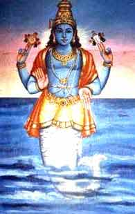

Matsya-the fish
In the earliest yuga (era) of Sata-yuga, a king named Manu was performing severe penance for thousands of years. One day as he was performing ablutions with river water, a small fish came into his hands and just as he was about to throw the fish back into the river, the fish requested the king to save its life. Heeding its request, the king put the fish into a jar of water but the fish started growing and the jar was not big enough for it. Then the king threw it into the river, but it soon it outgrew the river and the king then threw it into Ganges and then into the ocean. The king realised that it was Lord Vishnu himself and then the lord made an appearance and made a special request to the king. It predicted that the world would come to an end by a huge flood in seven days and requested the king to build a huge boat and take the seven sages(hermits), seeds of all plants, one animal of each type and told him that he would appear as a fish to propel the boat to Mount Himavan for surviving the flood to the next yuga(eon). True to his word, after seven days the Lord appeared and the king tied the boat to the fish by using the royal serpent Vasuki and the fish took all of them to Mt Himavan and kept them there till the flood was over and in the new era, the king started procreation a for the new era.